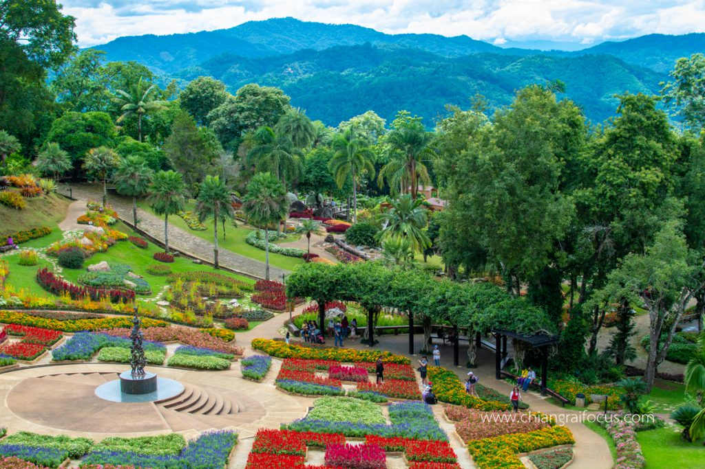

วัดร่องขุน
จุดหมายแรกที่ไม่ควรพลาดเพราะเป็นวัดที่มีความงดงามอลังการที่สุดแห่งหนึ่งในประเทศไทยออกแบบก่อสร้างโดยอาจารย์เฉลิมชัยโฆษิตพิพัฒน์ซึ่งได้สร้างงานพุทธศิลป์นี้เพื่อถวายเป็นงานศิลปะแด่พระบาทสมเด็จพระเจ้าอยู่หัวฯความงดงามของวัดโด่งดังไกลไปถึงต่างประเทศด้วยอุโบสถสีขาวประดับด้วยกระจกสีเงินแวววาวและลวดลายปูนปั้นอันวิจิตรเป็นเอกลักษณ์รวมถึงประดับด้วยภาพจิตรกรรมฝาผนังที่งดงามประณีตชนิดที่เห็นแล้วต้องตะลึง เปิดให้บริการ : 08.00-17.00 น.
ค่าเข้า : คนไทยเข้าชมฟรี ส่วนชาวต่างชาติต้องเสีย ค่าบัตรเข้าชมวัดร่องขุ่นราคา 100 บาท
วัดพระธาตุดอยตุง
พระธาตุดอยตุงมีความเก่าแก่สวยงามตั้งอยู่บนยอดเขาในวัดพระธาตุดอยตุงที่สามารถมองเห็นวิวเมืองเชียงรายได้อย่างเต็มตาค่ะพระธาตุดอยตุงมีลักษณะเป็นเจดีย์สีทองอร่าม2องค์คู่กันงดงามตามตำนานกล่าวว่าเป็นเจดีย์แห่งแรกในอาณาจักรล้านนาที่พระเจ้าอชุตราชทรงอัญเชิญพระบรมสารีริกธาตุจากประเทศอินเดียมาบรรจุไว้ในเจดีย์ต่อมาครูบาเจ้าศรีวิชัยได้บูรณะใหม่และสร้างพระธาตุองค์ใหม่ขึ้นมาคู่กันอีกทั้งพระธาตุดอยตุงยังเป็นพระธาตุประจำปีกุนตามความเชื่อล้านนาอีกด้วย
เปิดให้บริการ : 08.00-18.00 น. ค่าเข้า : ฟรี
ทำกิจกรรม
สวนเเม่ฟ้าหลวง
สวนแม่ฟ้าหลวงตั้งอยู่ด้านหน้าพระตำหนักดอยตุงที่นี่เป็นอีกจุดถ่ายรูปสวยๆในเชียงรายเต็มไปด้วยสวนดอกไม้เมืองหนาวที่พร้อใจกันเบ่งบานอวดความสวงาม เช่น กุหลาบ พิทูเนีย และบีโกเนีย อีกทั้งยังมีไม้มงคล ไม้ยืนต้น และซุ้มไม้เลื้อยสวนแห่งนี้มีพื้นที่ทั้งหมด 25 ไร่ค่ะเป็นสวนดอกไม้หมุนเวียนสลับไปทุกฤดู12ไร่และเป็นสวนปาล์มภูเขาหินต่างๆ13ไร่ภายในสวนก็จะมีสวนดอกไม้ต่างๆโรงเรือนไม้ในร่มจุดเด่นคือกล้วยไม้จำพวกรองเท้านารีชนิดต่างๆและงานประติมากรรมเด็กยืนต่อตัว ซึ่งได้รับพระราชทานชื่อว่า "ความต่อเนื่อง"
เปิดให้บริการ : 07.00-18.00 น. ค่าเข้า : คนทั่วไป ราคา 90 บาท นักเรียน / ผู้สูงอายุ / ผู้พิการ นักบวช ราคา 45 บาท
ทำกิจกรรม
.png)
สิงห์ปาร์ค เชียงราย
เชียงรายคือหนึ่งในแลนด์มาร์ที่ต้องแวะเช็คอินถ่ายรูปโดยเฉพาะกับสิงห์ตัวยักษ์สีเหลืองทองด้านหน้าทางเข้าภายในไร่มีกิจกรรมน่าสนใจมากมายทั้งการนั่งรถรางชมไร่ซึ่งมีพื้นที่กว่า8,000ไร่ปลูกพืชผักผลไม้ไว้หลายชนิดเลยทีเดียวรวมถึงด้านในยังมีสระน้ำขนาดใหญ่หลายแห่งชมไร่ชาอู่หลงที่ปลูกเป็นแถวสวยงามชมชีวิตสัตว์น่ารักอย่างยีราฟม้าลายวัววาตูซี่รวมถึงสนุกสนานไปกับการเล่นซิปไลน์สุดหวาดเสียวและปั่นจักรยานเที่ยวชมไร่ชมความงดงามของสวนดอกไม้ที่บานสวยท้าลมหนาวบอกเลยว่ามาเที่ยวชิลๆได้ทั้งวัน
เปิดให้บริการ : 08.00-18.00 น. ค่าเข้า : เข้าชมได้ฟรี
ทำกิจกรรม
สวนเเม่ฟ้าหลวง
สวนแม่ฟ้าหลวงตั้งอยู่ด้านหน้าพระตำหนักดอยตุงที่นี่เป็นอีกจุดถ่ายรูปสวยๆในเชียงรายเต็มไปด้วยสวนดอกไม้เมืองหนาวที่พร้อใจกันเบ่งบานอวดความสวงาม เช่น กุหลาบ พิทูเนีย และบีโกเนีย อีกทั้งยังมีไม้มงคล ไม้ยืนต้น และซุ้มไม้เลื้อยสวนแห่งนี้มีพื้นที่ทั้งหมด 25 ไร่ค่ะเป็นสวนดอกไม้หมุนเวียนสลับไปทุกฤดู12ไร่และเป็นสวนปาล์มภูเขาหินต่างๆ13ไร่ภายในสวนก็จะมีสวนดอกไม้ต่างๆโรงเรือนไม้ในร่มจุดเด่นคือกล้วยไม้จำพวกรองเท้านารีชนิดต่างๆและงานประติมากรรมเด็กยืนต่อตัว ซึ่งได้รับพระราชทานชื่อว่า "ความต่อเนื่อง"
เปิดให้บริการ : 07.00-18.00 น. ค่าเข้า : คนทั่วไป ราคา 90 บาท นักเรียน / ผู้สูงอายุ / ผู้พิการ นักบวช ราคา 45 บาท
ทำกิจกรรม
สิงห์ปาร์ค เชียงราย
เชียงรายคือหนึ่งในแลนด์มาร์ที่ต้องแวะเช็คอินถ่ายรูปโดยเฉพาะกับสิงห์ตัวยักษ์สีเหลืองทองด้านหน้าทางเข้าภายในไร่มีกิจกรรมน่าสนใจมากมายทั้งการนั่งรถรางชมไร่ซึ่งมีพื้นที่กว่า8,000ไร่ปลูกพืชผักผลไม้ไว้หลายชนิดเลยทีเดียวรวมถึงด้านในยังมีสระน้ำขนาดใหญ่หลายแห่งชมไร่ชาอู่หลงที่ปลูกเป็นแถวสวยงามชมชีวิตสัตว์น่ารักอย่างยีราฟม้าลายวัววาตูซี่รวมถึงสนุกสนานไปกับการเล่นซิปไลน์สุดหวาดเสียวและปั่นจักรยานเที่ยวชมไร่ชมความงดงามของสวนดอกไม้ที่บานสวยท้าลมหนาวบอกเลยว่ามาเที่ยวชิลๆได้ทั้งวัน